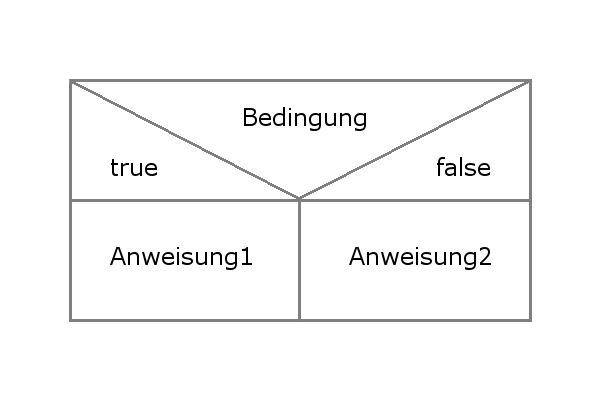

LF 06 - Anwendungsentwicklung
Index
- LF 06 - Anwendungsentwicklung
- Index
- Visual Basic
- Nassi-Shneiderman-Diagramm
- Datentypen VBA
- Escape Sequenzen
- Beispiel Programme
- Einfache und Zweifache Verzweigung
- Fallauswahl
- Zählerschleife
- Random Function
- Kopfgesteuerte Schleife
- Fußgesteuerte Schleife
- Übung
- Datum
- Übung: Sekunde umrechnen
- Übung: Korrektes Datum
- Fibonacci Zahlen errechnen
- `
- UserForm
- Beispiel: Passwort Generator mit CheckBoxen
- Zinsberechnung (inkl. Selbstzerstörung)
- Zeichen überprüfen
- Anzahl der Zeichen zählen
Mid$- Zeichen in ASCII Code wandeln
- Übung: Passwort überprüfen
Visual Basic
Variable :
Bereich im Arbeitsspeicher der eine genaue Adresse hat.
Interpreter vs. Compiler
Interpreter :
Dolmetscher, übersetzt Zeile für Zeile und füht immer wieder (oder kontinuierlich) aus.Compiler :
Einmalige Übersetzung des Codes.
Dim
Dim:
Dimension bzw. Ausdehnung
Dim [VARIABLE] as [DATENTYP]
When Option Explicit On or Option Explicit appears in a file, you must explicitly declare all variables by using the Dim or ReDim statements. If you try to use an undeclared variable name, an error occurs at compile time. The Option Explicit Off statement allows implicit declaration of variables.
Nassi-Shneiderman-Diagramm
- DIN 66261
- strukturierte Programmierung zerlege in Teilprobleme
Sinnbilder
- Immer in rechteckigen Struckturblöcken
- von oben nach unten
- leere Blöcke nur in Verzweigung
Datentypen VBA
Datentyp :
// ???
- Ein Bit mehr für +/(-)
Tabelle
// unvollständif
| VBA | Beschreibung | Größe |
|---|---|---|
| Boolean | Ja/Nein | 2 Byte |
| Byte | Ganzzahlen 0-255 | 1 Byte |
| Integer | Ganzzahlen -32.768 bis 32.767 | |
| String | Texte | Anz. Zeichen * 2 |
| Date | 8 Byte | |
| Double | Gleitkommazahl (15 Stellen) | 8 Byte |
| Single | Gleitkommazahl (7 Stellen) | 8 Byte |
| Currency | 4 Festkommastellen | 8 Byte |
| Object | 4 Byte |
Genauigkeit von Gleitkommazahl-Typen
| | Bitanzahl | Wertebereich von ... bis | signifikante Stellen | |---|---|---|---|---| | HALF | 16 | 3,1-10^-5^ | 6,6-10^4^ | 4 | | SINGLE, REAL | 32 | 1,5-10^-45^ | 3,4-10^38^ | 7--8 | | REAL | 48 | 2,9-10^-39^ | 1,7-10^38^ | 11--12 | | DOUBLE, REAL | 64 | 5,0-10^-324^ | 1,7-10^308^ | 15--16 | | REAL | 64 | 1,1-10^-306^ | 1,8-10^308^ | 15--16 | | EXTENDED | 80 | 1,9-10^-4951^ | 1,1-10^4932^ | 19--20 |
Ganzzahlige Datentypen
byte
Dieser Datentyp kann ganze Zahlen von --128 bis 127 speichern (8bit).
short
Eine beliebige ganze Zahl von -32.768 bis 32.767 passt in ein short (16bit).
int
Der Standard-Zahlentyp umfasst ganze Zahlen von -2.147.483.648 bis 2.147.483.647 (32bit). Für die meisten Berechnungen ist dieser Raum ausreichend, wenn man jedoch beispielsweise die Weltbevölkerung angeben will reicht der Datentyp Integer nicht aus.
long
Für Spezialfälle gibt es noch das long. Mit -9.223.372.036.854.775.808 bis 9.223.372.036.854.775.807 (64bit) sollte dieser Wert sogar ausreichen, um die Staatsverschuldung der gesamten westlichen Welt abzuspeichern.
Datentypen zur Speicherung von Gleitkommazahlen
Für Gleitkommazahlen gilt allgemein, je größer die gespeicherte Zahl, desto ungenauer der Wert.
float
Ein float kann Gleitkommazahlen abspeichern, jedoch hat auch ein float nur begrenzt Speicherplatz, worunter die Genauigkeit leidet (32bit). Da standardmäßig double verwendet wird, müssen float-Zahlen mit einem f oder F markiert werden
double
Für Rechnungen mit Gleitkommazahlen empfehlen wir daher die Verwendung des double Datentyps. Er bietet doppelt so viel Platz wie ein float und ist normalerweise mehr als ausreichend (64bit). Double ist der Standardtyp für Gleitkommazahlen.
Boolsche Werte
boolean
Dieser Datentyp kann lediglich die Werte true (wahr) und false (unwahr) annehmen.
Zeichen
char
Für einzelne Zeichen verwendet man den Typ char. Hier stehen 16bit zur Verfügung, das macht 65.536 Zeichen. Um einen Char zuzuweisen packt man ihn in einfache Anführungszeichen 'S' oder verwendet den Dezimalwert, z.B. 83. Weitere Möglichkeiten einen char zuzuweisen sind Hexadezimalwerte wie 0x0053 oder Unicode: \u0053.
Zeichenketten
String
Wenn mit ganze Zeichenketten gearbeitet werden soll, so kann man auf den String-Datentyp zurückgreifen. Eigentlich ist String kein Primitiver Datentyp, jedoch handelt es sich hierbei um eine Ausnahme (Strings sind im Prinzip Arrays, also Listen von Chars). Strings werden in doppelte Anführungszeichen gesetzt: "Das ist ein String!". Außerdem können Strings eine beliebige Länge aufweisen.
Escape Sequenzen
| Zeilenumbruch: | \n |
| Hochkomma: | \' |
| Doppeltes Hochkomma: | \" |
| Backslash: | \\ |
| Unicode XXXX (hexadezimal) | \uXXXX |
Beispiel Programme
In Excell / VB
Beispiel Eingabetest
Option Explicit
Sub Eingabetest() 'Name des prog
Dim Kapital As Byte 'Varibale Kapital definiert
Kapital = InputBox("Eingabe des Kapitalwerts")
MsgBox ("Der Wert des kapitals = " & Kapital & " Euro") 'Ausgabe des Text plus Werte
' Unterprog Ende
End Sub
Struktugramm
| EINGABETEST() |
|---|
| DIM Kapital AS CURRENCY |
| E: "Kaptial" ; Kapital |
| A: "Wert" & Kapital & " Euro" |
Bsp.: Addieren
Sub Addieren()
Dim Z1 As Long
Dim Z2 As Long
Dim E As Long
Z1 = InputBox("1. Zahl eingeben!")
Z2 = InputBox("2. Zahl eingeben!")
E = Z1 + Z2
MsgBox ("Das Ergebnis ist: " & E)
End Sub
Struktugramm
| ADDIEREN() |
|---|
| DIM "Z1; Z2; E AS Long |
| E: "1. Zahl eingeben"; Z1 |
| E: "2. Zahl eingeben"; Z2 |
| E = Z1 + Z2 |
| A: "Das Ergebnis ist gleich " & Ergebnis |
Einfache und Zweifache Verzweigung
Einfache
- Nur wenn Bedingung true = Block1
- Anweisungsblock kann aus einer oder mehr Anweisungen bestehen.
- Wenn Bedingung false = Ablauf ohne Anweisung
Zweifache

If [BEDINGUNG] Then
Anweisung1
Anweisung2
End if
Bsp.:
Sub rabatt()
Dim RG As Long
RG = InputBox("Wie hoch Rechnung?")
If RG > 1000 Then
MsgBox "10% Rabatt"
Else: MsgBox "Kein Rabatt!"
End If
End Sub
Fallauswahl
- geeignet bei mehr als 3 Bedingungen
Bsp.: Notenpogramm
Aufgabe:
- Input: Note
- Output: Bezeichnung / Error
Sub noten()
Dim NOTE As Byte
NOTE = InputBox("Geben Sie eine Note ein:")
Select Case NOTE
Case 1
MsgBox "Sehr gut"
Case 2
MsgBox "Gut"
Case 3
MsgBox "Befriedigend"
Case 4
MsgBox "Ausreichend"
Case 5
MsgBox "Mangelhaft"
Case 6
MsgBox "Ungenügend"
Case Else
MsgBox "Gibt es nicht."
End Select
End Sub
Alternative Lösung mit Switch
Sub notenswitch()
Dim NOTE As Byte
Dim TEXT As String
NOTE = InputBox("Geben Sie eine Note ein:")
TEXT = Switch(NOTE = 1, "Sehr gut", NOTE = 2, "Gut", NOTE >= 2, "Gibt es nicht.")
' Output:
MsgBox TEXT
End Sub
Zählerschleife
- Kopfgesteuert
- Anzahl der Durchläufe festgelegt
- benötigt Zählvariable und einen Start- wie Endwert
- Ist der Endwert über oder unterschritten wird die Schleife verlassen
Wiederholt die Anweisung solange die Bedingung wahr ist.
___________
| _________| --#Kopfgesteuert
| |
|_|
Syntax
For [VARIABLE] = [STARTWERT] to [ENDWERT] Step [Schrittweite]
Beisp.:
Sub zaehlerschleife()
Dim i As Integer
For i = 1 To 5
MsgBox i
Next i
MsgBox i
End Sub
Endlosschleife
Sub zaehlerschleife()
Dim i As Integer
For i = 1 To 5
MsgBox i
i = 3
Next i
MsgBox i
End Sub
Endlosschleife abbrechen: STRG + C + Pause
Zähler mit Input
Sub usercount()
Dim A As Integer
Dim E As Integer
Dim S As Integer
Dim i As Integer
A = InputBox("Gib die Startzahl ein:")
E = InputBox("Gib die Endzahl ein:")
S = InputBox("Gib die Schrittweite ein:")
If A <= E Then
S = Abs(S)
Else
S = Abs(S) * (-1)
End If
For i = A To E Step S
MsgBox i
Next i
MsgBox "Ende erreicht."
End Sub
Spiel: Zahlenraten
Sub zahlenraten()
Dim Z As Integer
Dim R As Integer
Dim S As Byte
Dim i As Integer
Z = InputBox("Gib eine Zahl ein:")
S = 10
For i = S To 1 Step -1
R = InputBox("Rate die Zahl:")
If R = Z Then
Exit For
Else
If R > Z Then
MsgBox "kleiner..."
Else
MsgBox "größer..."
End If
S = S - 1
MsgBox "Noch " & S & " Versuche..."
End If
Next i
If S > 0 Then
MsgBox "Gewonnen!"
Else
MsgBox "Leider verloren..."
End If
End Sub
Random Function
0 1
[----[ ' 0 ist inkludiert, 1 ist ausgeschlossen '
0 1
[----] ' 0 und 1 sind inkludiert '
RND()*11
' Ergibt ein Rundungsungleichgewicht für 0 und 10. Deshalb unsaubere Zufallszahlen (o0 und 10 sind benachteiligt) '
INT()
INT(RND()*11)
' Um die Wahrscheinlichkeit auch für 0 und die 10 gleich mit 2-9 zu setzen und das Rundungsungleichgewicht auszugleichen '
Beispiel Spiel
Sub randomeasyask()
Dim Z As Integer
Dim R As Integer
Dim i As Integer
Dim j As Byte
Dim x As Byte
Dim L As Integer
Dim MessageBoxButtons
Dim MessageBox
Z = Int(Rnd() * 1001)
j = 0
x = 0
For i = 10 To 1 Step -1
line1:
Err.Clear
On Error Resume Next
R = InputBox("Rate die Zahl:")
If Err.Number = 13 Then
Dim Msg, Style, Title, Help, Ctxt, Response, MyString
Msg = "Du hast keine Zahl eingegeben..." & vbCr & "Möchtest du weiter machen?"
Style = vbYesNo + vbQuestion
Title = "ACHTUNG!"
Response = MsgBox(Msg, Style, Title, Help, Ctxt)
If Response = vbYes Then
GoTo line1
Else
GoTo line9
End If
End If
If R = Z Then
Exit For
Else
If R > Z Then
MsgBox "kleiner... Noch " & i - 1 & " Versuche..."
Else
MsgBox "größer... Noch " & i - 1 & " Versuche..."
End If
End If
If j = 0 Then
If i = 1 Then
i = InputBox("Willst du neue Versuche? Gib eine Zahl zwischen 1 und 5 an." & vbCr & "Wenn du KEINE Versuche mehr willst tippe 0 ein:") + 1
j = i + j
End If
End If
x = 10 + j - i ' Zähler '
Next i
If i > 0 Then
MsgBox "Gewonnen! Mit >>" & x & "<< Versuchen."
If j > 0 Then
MsgBox "ABER du hast Hilfe gebraucht !"
Else
MsgBox "BRAVO! Du hast es ohne Hilfe geschafft!"
End If
Else
MsgBox "Leider verloren... Die Zahl war >>" & Z & " <<" & vbCr & "Du hast >>" & x & "<< Versuche gebraucht um zu versagen!"
End If
line9:
End Sub
ASCII Code
- 0 - 31
- Nicht druckbare Zeichen = Steuersignale
- 32
- Leertaste
- 48 - 57
- Buchstaben ohne Sonderzeichen
- 65 - 90
- Buchstaben ohne Sonderzeichen
- 97 + 122
- Buchstaben ohne Sonderzeichen
- 127
Entf
Bsp.: in VB
Für ASCII Zeichen von 32 bis 126:
INT(RND() *95) +32
| | | |
| | | # hierdurch immer ab 32
| | # hierdurch 0 bis 94
| # Zufallszahl (0,xxxx)
# Abrunden (zu ganzer Zahl)
# Also 32 bis (32+94=) 126
Random ASCII Zeichen ausgeben
Sub passw()
Dim Zahl As Integer
Dim Zeichen As String
Zahl = Int(Rnd() * 95) + 32
Zeichen = Chr(Zahl)
MsgBox Zeichen
End Sub
Bsp.: Passwortgenerator
Sub passw()
Dim Zahl As Integer
Dim Zeichen As String
Dim i As Integer
Dim D As Integer
D = Int(Rnd() * 6) + 7
For i = D To 1 Step -1
Zahl = Int(Rnd() * 95) + 32
Zeichen = Zeichen + Chr(Zahl)
Next i
MsgBox "Dein Passwort lautet: " & vbCr & Chr(13) & Zeichen
MsgBox "Es hat " & D & " Zeichen"
End Sub
Kopfgesteuerte Schleife
- minimal 0 Durchläufe
____________________________
| Solange bis Bedingung wahr |
| _________________________|
| | Anweisungsblock 1 |
|__|_________________________|
Zählschleife ist eine Kopfgesteuere Schleife aber nicht alle Kopfgesteuerten Schleifen sind Zählschleifen.
Do until [BEDINGUNGEN] 'solange bis true'
-or-
Do while [BEDINGUNGEN] 'solange true'
[Anweisung]
Loop
Fußgesteuerte Schleife
- Minimal ein Durchlauf
_________________________
| | Anweisungsblock 1 |
| |______________________|
| Solange Bedingung wahr |
|_________________________|
- Do
- [Anweisung]
- Loop Until (solange bis wahr)
- Loop While (solange wahr)
Do
[Anweisung]
Loop until [BEDINGUNG] 'solange bis true'
-or-
Loop while [BEDINGUNG] 'solange true'
Bsp.: Passwortgenerator für Excell
- nur Großbuchstaben & Zahlen
- 7 bis 12 Zeichen lang
- schreibt in eine neue Excell-Tabelle
- 8 Passwörter auf einmal pro Zelle
Sub testloop()
Dim i As Integer
Dim Z As Integer 'Zahl'
Dim P As String 'Passw'
Dim S As Integer 'Stellen'
Dim M As Integer 'Menge'
For M = 1 To 8 'Menge der Passwörter für Zellen'
S = Int(Rnd() * 6) + 7
For i = 1 To S
Do
Z = Int(Rnd() * 43) + 48
Loop Until Z > 64 And Z < 91 Or Z > 47 And Z < 58
P = P + Chr(Z)
Next i
ActiveCell.Value = P 'schreibe in Zelle'
ActiveCell.Offset(1, 0).Select 'wähle nächste Zelle'
P = "" 'Variable leeren'
Next M
'MsgBox "Dein Passwort ist " & pw & " und hat " & Ende & " Stellen."
End Sub
Bsp.: Passwort mit Bedingungen
- a-z, A-Z, 0-9, Sonderz.
- min. jeweils 1 von jedem Zeichen
- 8 Zeichen lang
Sub loop2()
Dim PW As String 'Passwort'
Dim GB As Byte 'Groß'
Dim KB As Byte 'Klein'
Dim ZI As Byte 'Ziffer'
Dim SZ As Byte 'Sonderz.'
Dim Z As Byte 'Zufallszahl'
Dim i As Integer
Dim x As Integer
x = 0
Do
'reset variablen'
PW = "" 'leeren'
GB = 0
KB = 0
ZI = 0
SZ = 0
For i = 1 To 8 'Länge'
Z = Int(Rnd() * 94) + 33 'Zufallszahl'
PW = PW + Chr(Z) 'Passwort zusammen setzen + Z in Zeichen verwandeln'
Select Case Z
Case 48 To 57
ZI = 1
Case 97 To 122
KB = 1
Case 65 To 90
GB = 1
Case Else
SZ = 1
End Select
Next i
x = x + 1 'Zähler'
Loop While GB * KB * ZI * SZ = 0 'Loop solange 0 '
MsgBox "Versuche: " & x & Chr(13) & "Passwort:" & vbCr & PW
End Sub
Übung
- Excell Tabelle mit Passwortgenerator
- Zeichen variabel (4-16)
- Menge variabel (1-16)
- a-z, A-Z, 0-9, Sonderzeichen
- min. eins von jedem Zeichen
Sub doppelrandom()
Dim Lang As Byte
Dim Menge As Byte
Dim j As Integer
Dim i As Integer
Dim Z As Byte
Dim PW As String
Dim ZI As Byte
Dim GB As Byte
Dim KB As Byte
Dim SO As Byte
Dim x As Long
'Dim l As Integer
Dim y As Long
'Lies die Passwortlänge aus der Zelle B5 '
Lang = Range("c5").Value
'Beendet das Prog, wenn Länge zu kurz '
If Lang < 4 Or Lang > 16 Then
MsgBox "Mindesten 4, maximal 16 Stellen!"
Exit Sub
End If
'Lies Menge der Passw aus Zelle B6 '
Menge = Range("c6").Value
'Beendet Prog wenn zu viele Passwörter'
If Menge > 16 Then
MsgBox "Maximal 16 Passwörter auf einmal!"
Exit Sub
End If
' Wähle Zelle B5 aus'
Range("b5").Select
' Lösche Inhalt'
Range("B5:B20").ClearContents
'For l = 16 To 1 Step -1
'ActiveCell.Value = ""
'ActiveCell.Offset(1, 0).Select
'Next l
' Wähle ERNEUT Zelle B5 aus'
Range("b5").Select
For j = Menge To 1 Step -1
y = Range("c21").Value
Do
PW = ""
ZI = 0
KB = 0
GB = 0
SO = 0
For i = Lang To 1 Step -1
Randomize Timer 'Zufälliger Start des Excell RND()'
Z = Int(Rnd() * 90) + 33
Select Case Z
Case 48 To 57
ZI = 1
Case 65 To 90
GB = 1
Case 97 To 122
KB = 1
Case Else
SO = 1
End Select
PW = PW + Chr(Z)
x = x + 1
Next i
Loop Until ZI + GB + KB + SO = 4
ActiveCell.Value = PW
ActiveCell.Offset(1, 0).Select
Next j
'Rekordzähler'
If x > y Then
y = x
Else
y = y
End If
Range("c20").Value = x
Range("c21").Value = y
End Sub
Datum
Übung: Sekunde umrechnen
Rechnet Sekunden in Jahre[^1], Tage, Stunden, Minuten und Sekunden aus.
[^1]: Der Einfachheit halber Rechnung in Jahren ohne Schaltjahre.
Sub datum()
Dim Z, y, t, S, M, Sek As Long
Z = InputBox("Bitte Sekunden eingeben")
y = Int(Z / 31536000)
t = Int((Z - y * 31536000) / 86400)
S = Int((Z - y * 31536000 - t * 86400) / 3600)
M = Int((Z - y * 31536000 - t * 86400 - S * 3600) / 60)
Sek = Z - y * 31536000 - t * 86400 - S * 3600 - M * 60
MsgBox "Es sind ca. " & y & " Jahre " & t & " Tage " & S & " Stunden " & M & " Minuten und " & Sek & " Sekunden."
End Sub
Übung: Korrektes Datum
Sub datumprüfen()
Dim M, Y, T, D As Long
line1:
M = InputBox("Monat:")
If M < 1 Or M > 12 Then
MsgBox "Falsche Monats-Angabe."
GoTo line1
Else
Y = InputBox("Jahr:")
line2:
T = InputBox("Tag:")
Select Case M
Case 4, 6, 9, 11
D = 30
Case 2
If Y / 4 = 0 And Y / 100 <> 0 Or Y / 400 = 0 Then
D = 29
Else
D = 28
End If
Case Else
D = 31
End Select
If T < 1 Or T > D Then
MsgBox "Falsche Tages-Eingabe."
GoTo line2
Else
MsgBox "Das Datum ist gültig."
End If
End If
End Sub
Fibonacci Zahlen errechnen
Fibonacci :
Die Fibonacci-Folge ist die unendliche Folge von natürlichen Zahlen, die (ursprünglich) mit zweimal der Zahl 1 beginnt oder (häufig, in moderner Schreibweise) zusätzlich mit einer führenden Zahl 0 versehen ist. Im Anschluss ergibt jeweils die Summe zweier aufeinanderfolgender Zahlen die unmittelbar danach folgende Zahl:
0, 1, 1, 2, 3, 5, 8, 13, ...
Sub fibonacci()
Dim Z1, Z2, Zahl As Long
Zahl = Range("C3").Value
Z1 = 0
Z2 = 1
Range("a5:a99").ClearContents ' Zellen leeren '
Range("a5").Value = Z1
Range("a6").Value = Z2
Range("a6").Select
While Z1 + Z2 <= Zahl
ActiveCell.Offset(1, 0).Select
ActiveCell.Value = Z1 + Z2
Z2 = Z2 + Z1
Z1 = Z2 - Z1
Wend
End Sub
UserForm
Unter: Einfügen > UserForm
Beispiel: Passwort Generator mit CheckBoxen
Private Sub CommandButton1_Click()
Dim PW As String 'Passwort'
Dim GB As Byte 'Groß'
Dim KB As Byte 'Klein'
Dim ZI As Byte 'Ziffer'
Dim SZ As Byte 'Sonderz.'
Dim Z As Byte 'Zufallszahl'
Dim i As Integer
Dim x As Integer
x = 0
If eingabe.Value < 4 Then
MsgBox "Bitte mindestens 4 Zeichen:"
Exit Sub
End If
Do
'reset variablen'
PW = "" 'leeren'
GB = 0
KB = 0
ZI = 0
SZ = 0
If Zahl = False Then ZI = 1
If Klein = False Then KB = 1
If Gross = False Then GB = 1
If Sonder = False Then SZ = 1
For i = 1 To eingabe.Value 'Länge'
Z = Int(Rnd() * 94) + 33 'Zufallszahl'
PW = PW + Chr(Z) 'Passwort zusammen setzen + Z in Zeichen verwandeln'
Select Case Z
Case 48 To 57
If Zahl = True Then
ZI = 1
End If
Case 97 To 122
If Klein = True Then
KB = 1
End If
Case 65 To 90
If Gross = True Then
GB = 1
End If
Case Else
If Sonder = True Then
SZ = 1
End If
End Select
Next i
x = x + 1 'Zähler'
Loop While GB * KB * ZI * SZ = 0 'Loop solange 0 '
ausgabe.Caption = PW
versuche.Caption = x
End Sub
Zinsberechnung (inkl. Selbstzerstörung)
Private Sub Zinsrechner_Click()
Dim K, ZS, Z As Double
Dim T As Integer
Dim x, y As Byte
K = Kapital.Value
ZS = Zinssatz.Value / 100
T = Tage.Value
x = 0
Do
If x > 0 Then
MsgBox "Du Vollpfosten! Schon wieder verkehrt! Da du scheinbar einfach zu dumm bist begehe ich lieber einfach Selbstmord!"
MsgBox "3"
MsgBox "2"
MsgBox "1"
MsgBox "Good Bye!"
Do
y = 1
Loop While y = 1
Else
If T < 0 Then
MsgBox "Du Idiot! Es gibt keine Minustage!"
Tage.Value = InputBox("Tage (diesmal bitte in PLUS!):")
End If
End If
x = x + 1
Loop While T < 0
Z = (K * ZS / 360) * T
'Zinsenausgabe.Caption = Z
Zinsenausgabe.Caption = Round(Z, 4)
End Sub
Zeichen überprüfen
Beispiel:
ASC(Mid$("Variable", 2, 1))
Anzahl der Zeichen zählen
LEN([ZEICHENKETTE])
Mid$
Gibt Zeichenanzahl ab einer bestimmten Stelle aus einem Text.
Mid$([VARIABLE], [STELLE], [ANZAHLZEICHEN])
Zeichen in ASCII Code wandeln
Asc([ZEICHEN])
Übung: Passwort überprüfen
- Prüfen ob jeweils ein:
- Groß-
- Kleinbuchstabe
- Zahl und
- Sonderzeichen
Sub zeichenpruefen()
Dim M As Integer
Dim PW As String
Dim i As Byte
Dim ZI, GB, KB, SOZ As Byte
Dim Zahl, Klein, Gross, Sonder As Byte
PW = Range("b3").Value
M = Len(PW)
Zahl = 0
Gross = 0
Klein = 0
Sonder = 0
For i = 1 To M
Dim Z As Integer
Z = Asc(Mid$(PW, i, 1))
Select Case Z
Case 48 To 57
ZI = 1
Zahl = Zahl + 1
Case 65 To 90
GB = 1
Gross = Gross + 1
Case 97 To 122
KB = 1
Klein = Klein + 1
Case Else
SOZ = 1
Sonder = Sonder + 1
End Select
Next i
If ZI + KB + GB + SOZ < 4 Then
MsgBox "Das Passwort: " & PW & " ist:" & vbCr & vbCr & " UNGÜLTIG!" & vbCr & vbCr & "Bitte versuche es noch einmal." & vbCr & "Hier siehst du welches Zeichen fehlt:" & vbCr & vbCr & Zahl & " : Zahl(en)" & vbCr & Gross & " : Großbuchst." & vbCr & Klein & " : Kleinbuchst." & vbCr & Sonder & " : Sonderz."
Else
MsgBox "Das Passwort: " & PW & " ist:" & vbCr & vbCr & " GÜLTIG :)" & vbCr & vbCr & Zahl & " : Zahl(en)" & vbCr & Gross & " : Großbuchst." & vbCr & Klein & " : Kleinbuchst." & vbCr & Sonder & " : Sonderz."
End If
End Sub